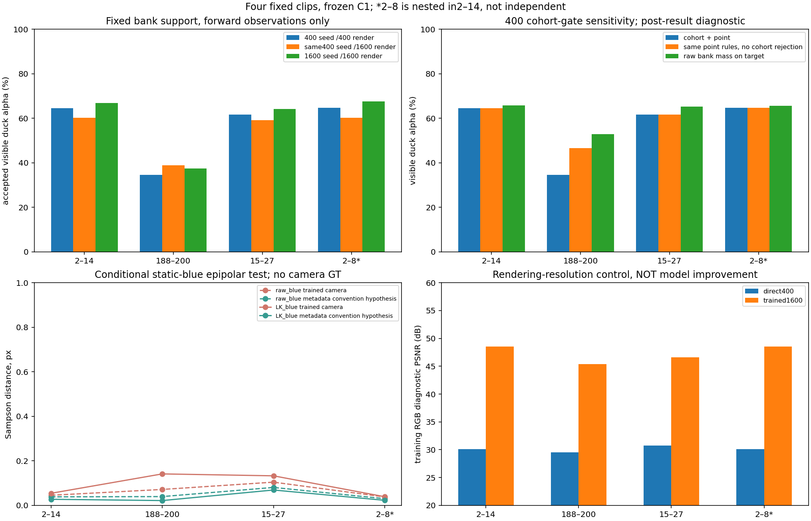
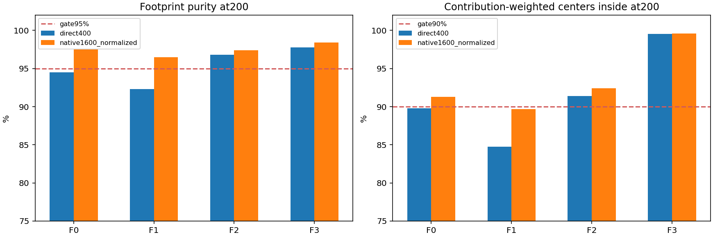
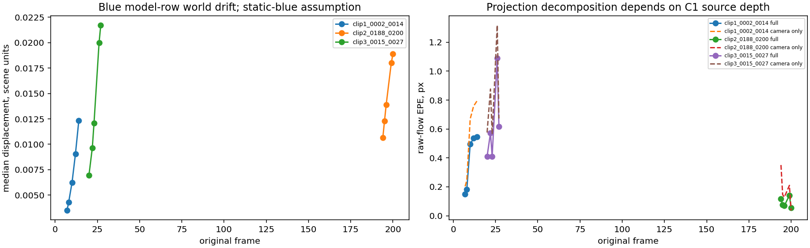
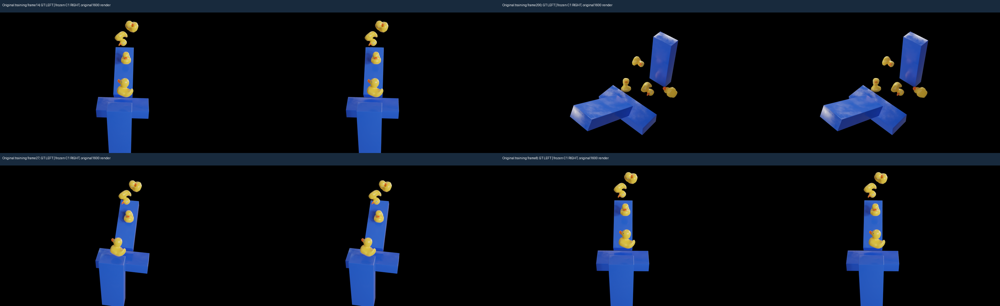
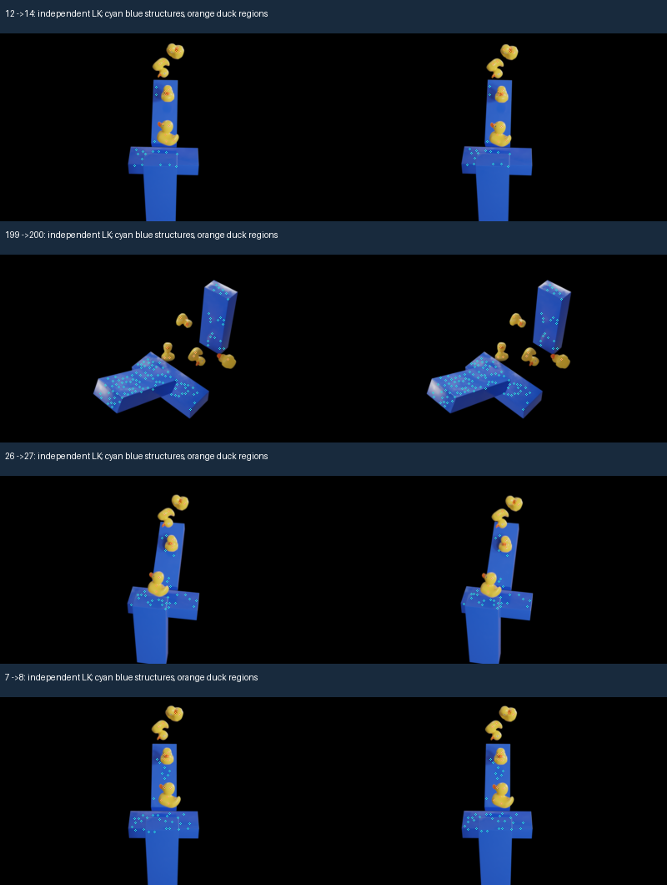
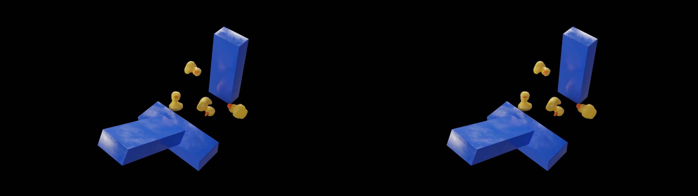

Frozen C1, no optimizer updates. Original1600 rendering and400 diagnostics differ; coverage is not geometry accuracy. 2–8 is nested in2–14. Camera tests assume blue structures static and use estimated image correspondences, not3D GT.
Assessment | Independent verification




Original frame14; GT LEFT | Render RIGHT
Original frame200; GT LEFT | Render RIGHT

Original frame27; GT LEFT | Render RIGHT
Original frame8; GT LEFT | Render RIGHT
First three observations select local rows; later observations evaluate them. These are training views, not a new heldout benchmark.
2 (seed) 3 (seed) 6 (seed) 7 (forward) 8 (forward) 10 (forward) 12 (forward) 14 (forward)
188 (seed) 190 (seed) 192 (seed) 194 (forward) 195 (forward) 196 (forward) 199 (forward) 200 (forward)
15 (seed) 16 (seed) 19 (seed) 20 (forward) 22 (forward) 23 (forward) 26 (forward) 27 (forward)